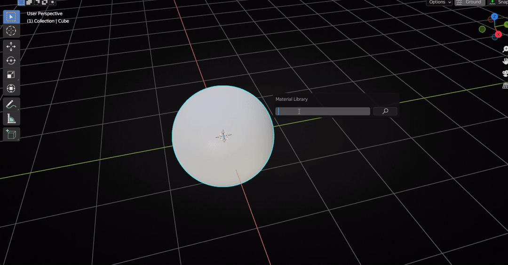
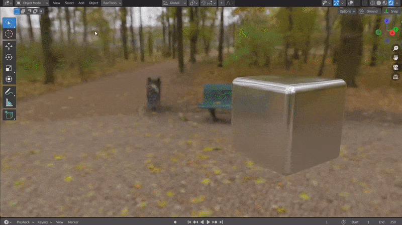
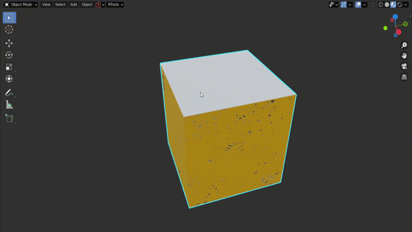
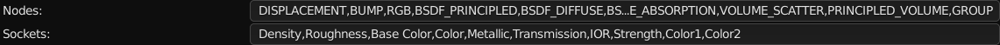
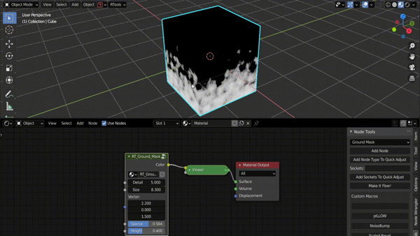
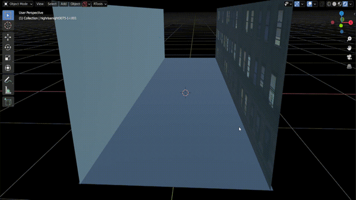
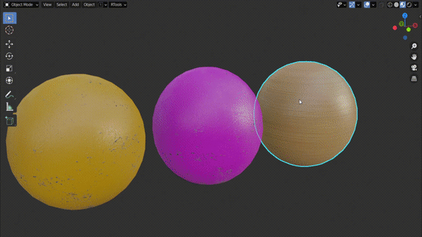
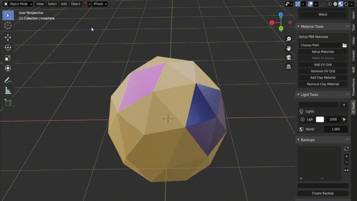
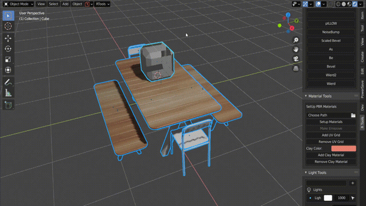

Material and Node Tools¶
Material and HDRI Tools¶
Material Library¶
Press ALT+M to bring up the Material Library Panel. Simple type the type of texture and press enter to search. All online materials from ambientCG.com matching the search query will be displayed on the left side and all the materials already downloaded will be displayed on the right side. Select the material and quality to download and load the textures.
On Blender V3.0+ you can hold down CTRL while clicking the download button to also mark the downloaded material as an asset for use from the Asset browser. 
HDRI Library¶
Press ALT+N to bring up the HDRI Library Panel. Type in the type of HDRI you are looking for(Like overcast,indoors,studio etc). All online HDRIs from polyhaven.com matching the search query will be displayed on the left side and all the HDRIs already downloaded will be displayed on the right side. Select the format and quality to download and the addon will automatically set up a world shader for you.
RanTools World Shader¶
RanTools comes with its own advanced world shader that let’s you control a lot of parameters of your HDRI like brightness,contrast,hue and even the blur amount. And to make it even easier to control, all these parameters are available right from the HDRI Library Panel. 
Extract Sun¶
You can control the color and strength of the brightess parts of the HDRI using the extract sun feature. Once you check the checkbox it will display three more fields : Threshold that is how bright a pixel needs to be inorder to be affected by the extract sun feature. Strength that is how bright you want the extracted parts to be and the Color that is the color you want your brightest parts to be.
Solid Color For Background¶
You can choose to use a solid color for your background while keeping the light and reflections from the HDRI using this checkbox.
Quick Material Adjust Panel¶
Press SHIFT +F to open Quick Material Adjust Panel. In this panel, you can quickly adjust the most commonly used settings, copy values across different materials, and add adjustment nodes. If a value is derived from another node, you will see a lock icon next to it, clicking the lock icon will insert an adjustment node in between and unlock the slider. You can then change the values with the slider. Adjustment nodes are nothing but Math nodes or Hue-Saturation Adjustment node in case of color inputs.

The Nodes and inputs visible in the Quick Material Adjust Panel can be customised from the preferences.

To make it easier to add any node to QAM there are two buttons in the N-Panel of shader editor.

Add Selected Node To QMA : Select the node you want to add to QMA and click this button, the node will be added to QMA. But it will not be displayed unless you also add some sockets of that node to the socket list. So when you click this button, all the socket names will be displayed in the field below. You can then edit and remove the sockets you don’t want in the QMA and click the button below. Add Sockets To QMA: Adds sockets from the field above to the socket list.
Material Transfer¶
From the pie menu Shift+W, select Material Transfer. You can then click on any object to pick the material, and click again on any object to drop the material.

Material Change Menu¶
Press SHIFT +J to access the Material Change menu and Quickly change materials on objects. Also works in Edit Mode. Hold CTRL while clicking to add an emissive copy of the material.

Hold SHIFT to add a copy of the material. In the following example, the same material is assigned to the right sphere, while a copy of the material is assigned to the left sphere ( holding SHIFT)

Hold ALT to open the Quick Material Adjustment for the material.

Click +New Material to create a new material

Make Emissive¶
In Edit Mode with some faces selected click make emissive (Alt+G) to replace the material with an emissive copy of it. (similar to Shift-click in Material Change Menu).
Setup Materials¶
Tired of searching for textures one by one? No more: RanTools is here to save the day. Just select a directory and click Setup Materials and RanTools will find all pbr material textures available in the directory or one of its subdirectories and set them up for you. e.g. if you downloaded all your materials in the download folder, you can select that folder and click “setup materials” and all materials will be created for you. In Blender V3.0+ you can hold down CTRL while clicking the setup materials button to mark all the created materials as Asset and they will be automatically added to your asset browser under ‘RanTools Materials’ Catagory.
Add UV Grid¶
Just select the object you want to add the checker texture to and click ” Add UV Grid”. You can adjust the scale of the texture by moving the mouse on the horizontal axis. Click Remove UV Grid to remove the checker texture

To quickly toggle Checker Texture you can use the pie menu(Shift+W).

Add Clay Material¶
Add clay material to all selected objects. By default, transparent material is added to all objects that have transparency so that they are not visible in the render.

If you want to add clay to all objects, regardless of whether they are transparent or not, hold down CTRL while clicking Add Clay Material.

Node Tools¶
Node Mix Menu¶
Mixing 2 Materials¶
You can mix any 2 materials using any type of masks(Edge Masks,Noise,Musgrave or height maps from any of the 2 materials)
Simply select the last node before the material output node and press ALT+M to bring up the Node Mix Menu and under the Other Materials sub-menu select the 2nd material you want to mix and then select the type of mask you want to use.
Edge Mask Example:

Height Mask Example(Using Height Map as Mask):

Mix Imperfections¶
Mix Imperfections Maps with any texture node by simply selecting the node and then selecting the imperfection type from the node mix menu.

Plug Imperfections¶
You can also directly plug a imperfection map instead of mixing it by holding down ALT while seletecting the imperfection type.

Add Node¶
RanTools comes with some usefull NodeGroups listed below:
Color Adjust:

Ground Mask:

Grunge Mask:

You can also plug in another mask like an edge mask or a noise texture into the 1st socket where you want the grunge to appear.
Edge Mask |
Noise Texture |
|---|---|
|
|


Edge Mask:

Worn Edge Mask:

Edge Mask Nodes use bevel node which does not work in eevee so if you want to use these masks in eevee you can bake them using Bake Bevels in texture bake panel.
Make it Flow!¶
Adds a Flow map Node to selected nodes.Can be used for creating moving textures(like lakes,oceans).

Also works for multiple nodes

Speed controls how fast the texture moves and distorion controls how much the texture moves. In above examples solid colors are used for flow maps thats why flow is only in one direction at a time but you can use an actual flow map to define how the image moves